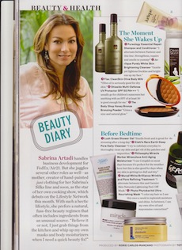
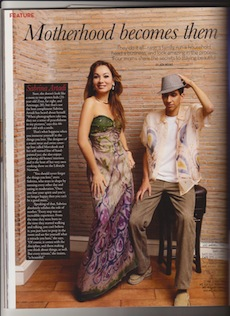

Beauty & Health

Sabrina Artadi's Beauty Diary
Sabrina Artadi handles business development for FedEx / Air2. But she juggles several other roles as well --- as mother, creator of hand - painted jusi clothing for her Sabrina's Silks line and soon, as the star of her own cooking show, which debut s on Lifestyle Network this month. With such a hectic lifestyle, she prefers a natural, fuss-free beauty regimen that often includes ingredients from an unusual source. "Believe it or not, I just grab things from the kitchen and whip up my own masks and body moisturizers when I need a quick beauty fix!"
Look Magazine May-June 2011

Motherhood becomes them
They do it all --- raise a family, run a household, head a business, and look amazing in the process.
By: Joy Rojas
Sure, she doesn't look like a mom to tow grown kids (21-year-old Zeus, far right and Amouage, 20), but that's not the best compliment Sabrina Artadi has heard about herself. "When photographers take me, they see a sense of peacefulness in my presstures," says this 44-year-old with a smile.
That's what happens when you immerse yourself in the things you love. The designer of a resort wear and swim cover-up line called Marrakesh and her self-names line of hand-painted jusi, she also enjoys updating old homes' interiors and is the host of her very own cooking show on the Lifestyle Network.
"You should never forget the things you love," avers Sabrina, who stays in shape by running every other day and eating in moderation. "Once you lose your spirit and you're no longer happy, then you can't be a good mom."
Speaking of that, Sabrina absolutely relishes the role of mother. "Every step was an incredible experience. From the time they were born to the time they started walking and talking, you can't believe it, you just have to peep in the room and see for yourself what a miracle you have," she says. "Of course, it comes with the discipline, and them making you thing about things, as well. But every minute," she insists, "is beautiful."